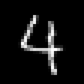
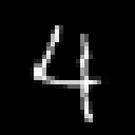
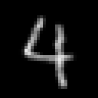
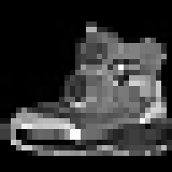
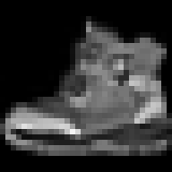
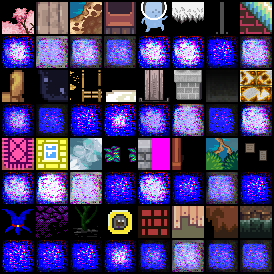
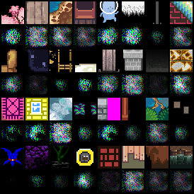
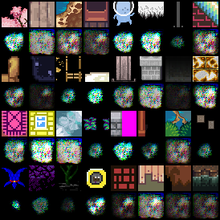
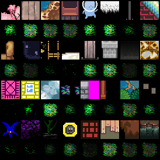

variational auto-encoder on RPG Tile dataset ←
There is a deep love/hate relationships with neural networks. Why the heck do i need to train a small network like this
model = VariationalAutoencoderConv(
shape=(3, 32, 32), channels=[16, 24, 32], kernel_size=5,
latent_dims=128,
)
optimizer = Adam(model.default_parameters(), lr=.0001, weight_decay=0.000001)
for 10 hours and it still does not reach the optimum?
And how could one tell after 30 minutes where this is going to go? The plot shows the l1 validation loss (right) over 1700 epochs! Why does this network need to look at things 1700 times???
Well, it's a complicated dataset, for sure.
But i feel there is something wrong in the method. This backpropagation gradient descent, although mathematically grounded, feels like a brute-force approach.
comparing different datasets ←
The rpg tile dataset is now fixed to 47579 training and 2505 validation grayscale images at 32x32 pixels. Running the following experiment to compare with the "classic" datasets:
trainer: src.train.TrainAutoencoder
matrix:
ds:
- "mnist"
- "fmnist"
- "rpg"
experiment_name: vae/base28_${matrix_slug}
train_set: |
{
"mnist": mnist_dataset(train=True, shape=SHAPE),
"fmnist": fmnist_dataset(train=True, shape=SHAPE),
"rpg": rpg_tile_dataset_3x32x32(validation=False, shape=SHAPE),
}["${ds}"]
validation_set: |
{
"mnist": mnist_dataset(train=False, shape=SHAPE),
"fmnist": fmnist_dataset(train=False, shape=SHAPE),
"rpg": rpg_tile_dataset_3x32x32(validation=True, shape=SHAPE)
}["${ds}"]
batch_size: 64
learnrate: 0.0003
optimizer: Adam
scheduler: CosineAnnealingLR
max_inputs: 1_000_000
globals:
SHAPE: (1, 28, 28)
CODE_SIZE: 128
model: |
encoder = EncoderConv2d(SHAPE, code_size=CODE_SIZE, channels=(16, 24, 32), kernel_size=3)
decoder = DecoderConv2d(SHAPE, code_size=CODE_SIZE, channels=(32, 24, 16), kernel_size=3)
VariationalAutoencoder(
encoder = VariationalEncoder(
encoder, CODE_SIZE, CODE_SIZE
),
decoder = decoder,
reconstruction_loss = "l1",
reconstruction_loss_weight = 1.,
kl_loss_weight = 1.,
)
Note that the MNIST and FMNIST images are 28x28 pixels and the RPG dataset is resized (via BILINEAR filter) to the same resolution.
So, the RPG datasets seems to be equally easy/complicated like MNIST and FMNIST is pretty hard in comparison. Doing the same for 32x32 pixels (where the other two datasets are resized):
Huh? Very different results. MNIST easiest, FMNIST middle, RPG hardest.
Take care of the choice of interpolation! ←
After some testing it seems that the interpolation mode
during resizing has a strong influence. So i ran the above
experiment on different resolutions (res) and with
interpolation mode BILINEAR (aa = True) and
NEAREST (aa = False) and two different
learning rates (lr):
(using file experiments/vae/compare-datasets.yml)
| dataset | aa | res | lr | validation loss (1,000,000 steps) | meter |
|---|---|---|---|---|---|
| mnist | False | 20 | 0.0003 | 0.0274497 | ******* |
| fmnist | False | 20 | 0.0003 | 0.0482327 | ****************** |
| rpg | False | 20 | 0.0003 | 0.052915 | ******************** |
| mnist | 28 | 0.0003 | 0.0351929 | *********** | |
| fmnist | 28 | 0.0003 | 0.0534702 | ********************* | |
| rpg | False | 28 | 0.0003 | 0.0514313 | ******************* |
| mnist | False | 32 | 0.0003 | 0.0333494 | ********** |
| fmnist | False | 32 | 0.0003 | 0.0495315 | ****************** |
| rpg | 32 | 0.0003 | 0.0532157 | ******************** | |
| mnist | True | 20 | 0.0003 | 0.0193185 | ** |
| fmnist | True | 20 | 0.0003 | 0.0337913 | ********** |
| rpg | True | 20 | 0.0003 | 0.0337807 | ********** |
| mnist | 28 | 0.0003 | 0.0357742 | *********** | |
| fmnist | 28 | 0.0003 | 0.0528828 | ******************** | |
| rpg | True | 28 | 0.0003 | 0.0369611 | ************ |
| mnist | True | 32 | 0.0003 | 0.0246818 | ***** |
| fmnist | True | 32 | 0.0003 | 0.0380947 | ************ |
| rpg | 32 | 0.0003 | 0.0533928 | ******************** | |
| ------ | |||||
| mnist | False | 20 | 0.001 | 0.0221466 | **** |
| fmnist | False | 20 | 0.001 | 0.0421959 | *************** |
| rpg | False | 20 | 0.001 | 0.0454093 | **************** |
| mnist | 28 | 0.001 | 0.0326754 | ********* | |
| fmnist | 28 | 0.001 | 0.0491466 | ****************** | |
| rpg | False | 28 | 0.001 | 0.0472919 | ***************** |
| mnist | False | 32 | 0.001 | 0.0300777 | ******** |
| fmnist | False | 32 | 0.001 | 0.0459637 | ***************** |
| rpg | 32 | 0.001 | 0.0485321 | ****************** | |
| mnist | True | 20 | 0.001 | 0.0157305 | * |
| fmnist | True | 20 | 0.001 | 0.0278209 | ******* |
| rpg | True | 20 | 0.001 | 0.0281536 | ******* |
| mnist | 28 | 0.001 | 0.0321101 | ********* | |
| fmnist | 28 | 0.001 | 0.0492271 | ****************** | |
| rpg | True | 28 | 0.001 | 0.0349186 | *********** |
| mnist | True | 32 | 0.001 | 0.0221171 | **** |
| fmnist | True | 32 | 0.001 | 0.0357977 | *********** |
| rpg | 32 | 0.001 | 0.0489479 | ****************** |
(No entry in aa means that there was no resizing necessary)
It confirms the strong correlation of the dataset difficulty and the interpolation method. It gave me some headache in the beginning but looking at resized examples makes it understandable:
| Original MNIST image (28x28) | resized to 32x32 without | and with bilinear filtering |
|---|---|---|
 |
 |
 |
| Original FMNIST image (28x28) | resized to 32x32 without | and with bilinear filtering |
|---|---|---|
 |
 |
| Original RPG image (32x32) | resized to 28x28 without | and with bilinear filtering |
|---|---|---|
The bilinear filter blurs out a lot of the single pixel
details and makes the images "easier" to auto-encode.
Ignoring the aa = True runs in the table above we can see
that the RPG dataset is, in comparison, equally "hard"
when down-scaled to the FMNIST size and a little harder
when FMNIST is up-scaled (because some pixels are just
repeated).
Side note: Many of the images in RPG are originally 16x16 but there is a good percentage of images that were 32x32 or larger. All of them have been resized to 32x32 without interpolation.
For comparison, below is a run on a dataset of 60,000 noise images (mean=0.5, std=0.5, clamped to range [0, 1]), +10,000 for validation (green).
2023-12-08 autoencoder with histogram loss ←
Stupid experiment, just to get a feeling for the parameters.
Basically a simple autoencoder but the loss only considers the histogram using the soft histogram mentioned by Tony-Y in the pytorch forum.
matrix:
bins: [100, 200, 50]
sigma: [100, 200, 50]
norm: [False]
loss: ["'l1'"]
experiment_name: ae/hist/hl-${matrix_slug}
trainer: experiments.ae.trainer.TrainAutoencoderSpecial
train_set: |
rpg_tile_dataset_3x32x32(SHAPE, validation=False)
validation_set: |
rpg_tile_dataset_3x32x32(SHAPE, validation=True)
batch_size: 64
learnrate: 0.0003
optimizer: AdamW
scheduler: CosineAnnealingLR
loss_function: |
HistogramLoss(${bins}, 0., 1., sigma=${sigma}, loss=${loss}, normalize=${norm})
max_inputs: 500_000
globals:
SHAPE: (3, 32, 32)
CODE_SIZE: 128
model: |
encoder = EncoderConv2d(SHAPE, code_size=CODE_SIZE, channels=(24, 32, 48), kernel_size=5)
encoded_shape = encoder.convolution.get_output_shape(SHAPE)
decoder = nn.Sequential(
nn.Linear(CODE_SIZE, math.prod(encoded_shape)),
Reshape(encoded_shape),
encoder.convolution.create_transposed(act_last_layer=False),
)
EncoderDecoder(encoder, decoder)
Normalizing the histograms before calculating the difference did not converge well. And reproduction look terrible as could be expected:
| green | yellow |
|---|---|
 |
 |
| purple | gray |
|---|---|
 |
 |
2024-01-21 stacked symmetric one-layer-at-a-time ←
Trained autoencoder on 3x64x64 images. Encoder and decoder are each 25 layers of 3x3 cnn kernels and a final fully connected layer. code_size=128
In training, every N input steps the number of used layers is increased. First, the autoencoder only uses first encoder and last decoder layer. That way, it's possible to train the whole 25 layers after a time. It's just not good:
- white: reference baseline cnn (using space-to-depth)
- cyan: 32-chan 25 layer cnn, next layer activated every 47,000 steps (1 epoch)
- yellow: 32-chan 25 layer cnn, next layer activated every 8,000 steps
- purple: 128-chan 25 layer cnn, next layer activated every 8,000 steps
Also compared symmetric vs. non-symmetric. Symmetric means the convolutions and fully connected layer use the same weights for encoding and decoding. symmetric is half the number of parameters for the autoencoder and performs only slightly below non-symmetric. The biases are not shared between encoder and decoder.
2024-10-23 Deep-Compression Auto-Encoder ←
Experiments with a small version of DC-AE from the paper DEEP COMPRESSION AUTOENCODER FOR EFFICIENT HIGH-RESOLUTION DIFFUSION MODELS arxiv.org/abs/2205.14756
Code can be found here https://github.com/mit-han-lab/efficientvit, and i copied the DC-AE parts and ported the type-hints back to python <3.10 here.
Using the good ol' 47,579 RPG dataset, for one million 3x32x32 images.
(Not all runs are finished because they seemed to converge at the same validation error)
The baseline (gray) is the usual stacked symmetric CNN AE with 24, 32, 48 channels, kernel-size 5 and a linear layer for latent code size of 128, which results in a compression ratio of 24.
The DC-AE model configurations i tried are:
dcae-03 (yellow) params: 81M, ratio 96 ←
"latent_channels=32 " "encoder.block_type=[ResBlock,ResBlock,ResBlock,EViT_GLU,EViT_GLU,EViT_GLU] " "encoder.width_list=[64,128,256,256,512,512] encoder.depth_list=[0,4,8,2,2,2] " "decoder.block_type=[ResBlock,ResBlock,ResBlock,EViT_GLU,EViT_GLU,EViT_GLU] " "decoder.width_list=[64,128,256,256,512,512] decoder.depth_list=[0,5,10,2,2,2] " "decoder.norm=[bn2d,bn2d,bn2d,trms2d,trms2d,trms2d] decoder.act=[relu,relu,relu,silu,silu,silu]"
dcae-04 (purple) params: 81M, ratio 48 ←
lowered compression ratio (via latent_channels)
"latent_channels=64 " "encoder.block_type=[ResBlock,ResBlock,ResBlock,EViT_GLU,EViT_GLU,EViT_GLU] " "encoder.width_list=[64,128,256,256,512,512] encoder.depth_list=[0,4,8,2,2,2] " "decoder.block_type=[ResBlock,ResBlock,ResBlock,EViT_GLU,EViT_GLU,EViT_GLU] " "decoder.width_list=[64,128,256,256,512,512] decoder.depth_list=[0,5,10,2,2,2] " "decoder.norm=[bn2d,bn2d,bn2d,trms2d,trms2d,trms2d] decoder.act=[relu,relu,relu,silu,silu,silu]"
dcae-05 (green) params: 110M, ratio: 48 ←
increased width
"latent_channels=64 " "encoder.block_type=[ResBlock,ResBlock,ResBlock,EViT_GLU,EViT_GLU,EViT_GLU] " "encoder.width_list=[128,256,256,512,512,512] encoder.depth_list=[0,4,8,2,2,2] " "decoder.block_type=[ResBlock,ResBlock,ResBlock,EViT_GLU,EViT_GLU,EViT_GLU] " "decoder.width_list=[128,256,256,512,512,512] decoder.depth_list=[0,5,10,2,2,2] " "decoder.norm=[bn2d,bn2d,bn2d,trms2d,trms2d,trms2d] decoder.act=[relu,relu,relu,silu,silu,silu]"
dcae-06 (orange): params: 142M, ratio: 48 ←
increased width
"latent_channels=64 " "encoder.block_type=[ResBlock,ResBlock,ResBlock,EViT_GLU,EViT_GLU,EViT_GLU] " "encoder.width_list=[64,128,256,256,512,1024] encoder.depth_list=[0,4,8,2,2,2] " "decoder.block_type=[ResBlock,ResBlock,ResBlock,EViT_GLU,EViT_GLU,EViT_GLU] " "decoder.width_list=[64,128,256,256,512,1024] decoder.depth_list=[0,5,10,2,2,2] " "decoder.norm=[bn2d,bn2d,bn2d,trms2d,trms2d,trms2d] decoder.act=[relu,relu,relu,silu,silu,silu]"
dcae-07 (pink): params: 106M, ratio: 48 ←
Sames as dcae-04 but increased depth.
"latent_channels=64 " "encoder.block_type=[ResBlock,ResBlock,ResBlock,EViT_GLU,EViT_GLU,EViT_GLU] " "encoder.width_list=[64,128,256,256,512,512] encoder.depth_list=[0,4,8,2,3,4] " "decoder.block_type=[ResBlock,ResBlock,ResBlock,EViT_GLU,EViT_GLU,EViT_GLU] " "decoder.width_list=[64,128,256,256,512,512] decoder.depth_list=[0,5,10,2,3,4] " "decoder.norm=[bn2d,bn2d,bn2d,trms2d,trms2d,trms2d] decoder.act=[relu,relu,relu,silu,silu,silu]"
The original model in the repo has 323M parameters which i could not train on my GPU,
so i lowered the width of the layers to make it fit. Also increased the learning rate from
originally 9.375e-7 to 9.375e-5. Batch size was 64.
The latent shape for 32x32 images is actually [<latent_channels>, 1, 1]. The first try with
compression ratio 96 was a bit too much. With ratio 48 the results are better than the baseline (with 24)
so this is promising. However, none of the changes (dcae-05 to dcae-07) did enhance the performance.
Here's the reconstruction of the validation set for baseline and dcae-05: